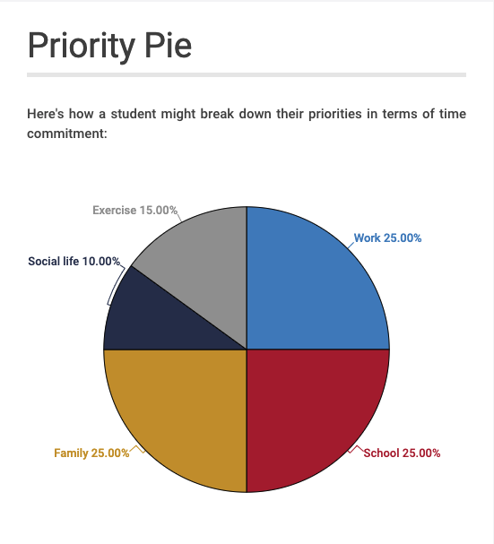
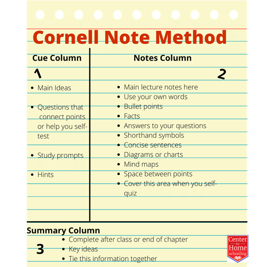
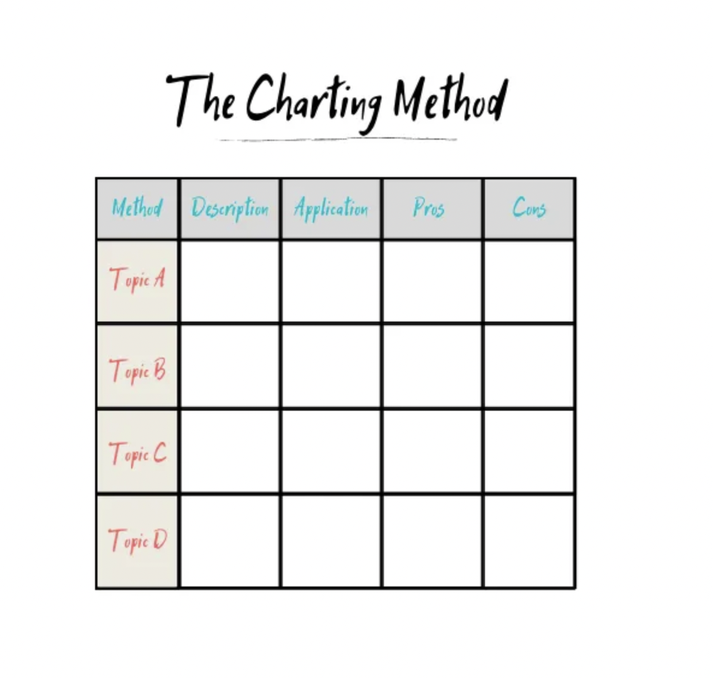

Set specific goals: Achieving
your goals depends heavily on how well you can
manage your time. Making a priority pie is one way you can plan
how you will efficiently divide your time in your forthcoming semester.

An example of how you can divide your time.
Source:
Click Here
Be resilient: Even with a good plan, obstacles will arise.
How well you deal with those obstacles depends on your perspective.
If you lean toward a fixed mindset, the good news is that it is not permanent.
No one falls into one mindset 100 percent of the time.
Training your brain to see opportunity where you once saw a
roadblock is possible. “It is really wonderful how much resilience there is in human nature.
Let any obstructing cause, no matter what, be removed in any way, even by death,
and we fly back to first principles of hope and enjoyment.” ― Bram Stoker, Dracula
Find out what your unique learning style is:
An individual's learning style refers to the preferred way a student receives, assimilates and retains
information. The different learning styles includes: Visual learning, Auditory learning, Reading/Writing Learning
Kinesthetic Learning. Read more on the different learning styles
here
Take great notes: Note taking is important for students who wants good grades. To take notes effectively,
you need to listen in class attentively and avoid distractions. Below is a list of different effective note taking methods:
Outline Method of note taking

Cornell Method of note taking

Charting Method of note taking
Reward Yourself: Studies can be quite tasking and challenging, this is why it is
very important to always remember to reward yourself whenever you complete an academic task.
Self rewarding is relative to different individuals and is based on what you as a person enjoy doing.
You can either pick up a novel you've wanted to read for a while or just take a walk outside,
its entirely up to you!
Implementing any or all of these tips will help you tremendously improve your academic perfomance
and help you have more control over your academic life!